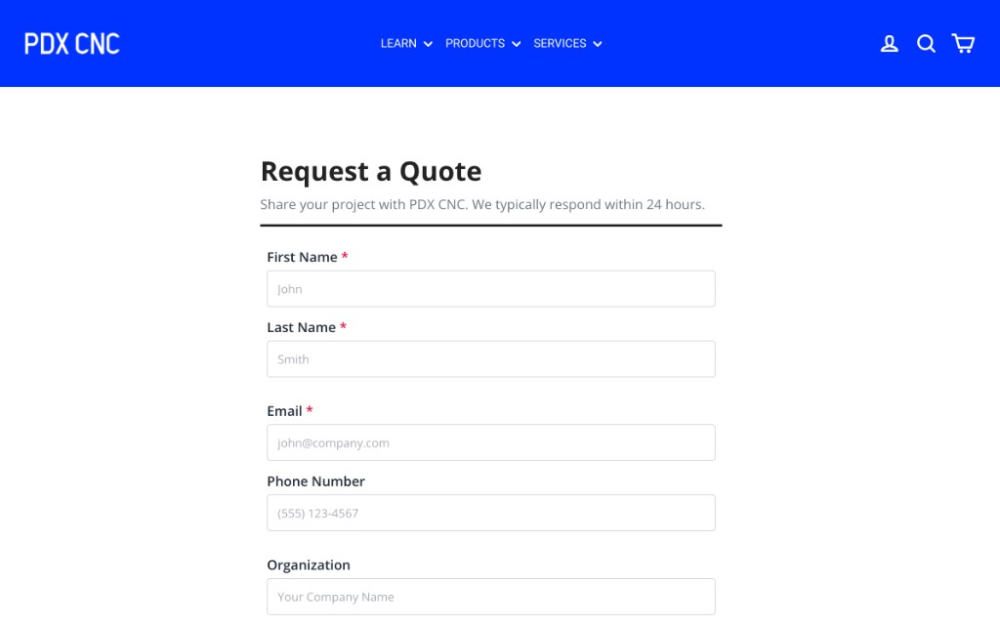
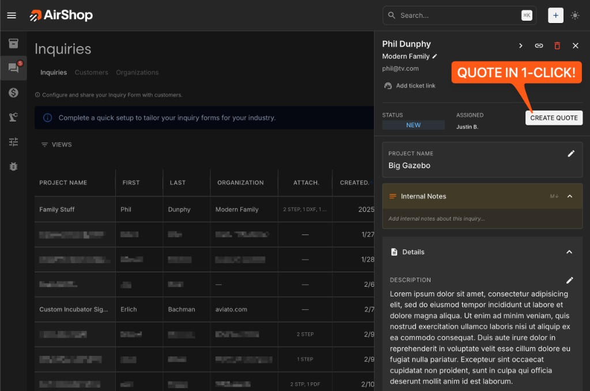

Most businesses lose work before they even know it. A potential customer fills out a contact form, and the inquiry sits in an inbox for hours — sometimes days — before someone manually copies the details into a spreadsheet, opens a quoting tool, and starts building a response.
By then, the customer has already heard back from someone else.
There's a faster way. With the right workflow, you can go from receiving a customer inquiry to sending a polished, professional quote in under five minutes. Here's exactly how it works.
The speed advantage most businesses ignore
When customers are shopping for custom work, they don't send one request. They send three, five, sometimes ten. The business that responds first doesn't just win points for speed — they set the bar. Every quote that arrives after yours gets compared to the one that's already sitting in the customer's inbox.
And here's the part that surprises people: you don't have to be the cheapest to win the job. When your quote lands first and looks sharp, customers will choose you at a higher price over the competitor who took three days to send back a rough number in a plain-text email. Speed and professionalism signal that you run a tight operation — and that's exactly the kind of business people want handling their work.
Step 1: Embed the inquiry form on your website
The workflow starts on your website. Instead of a generic "contact us" form that dumps everything into an email inbox, you embed an AirShop inquiry form directly on your site. It takes a few lines of code.
The form is designed for real project inquiries. Customers can describe what they need, attach files like drawings or reference photos, and include all the relevant details — quantity, material preferences, timeline. Everything you need to quote, collected upfront in a structured way.
No more parsing through rambling emails or chasing customers for basic info. The form does the work for you.

Step 2: The inquiry lands in AirShop instantly
The moment a customer submits the form, the inquiry appears in your AirShop dashboard with all the details organized and ready to review. Customer name, contact info, project description, attached files — it's all there, not buried in an inbox.
You get notified immediately. There's no delay, no manual import, no copy-pasting from email into another system. The inquiry is already inside the tool where you build quotes.
This is where most businesses lose time without realizing it. The gap between "received an inquiry" and "started working on a quote" is usually the biggest bottleneck. When the inquiry is already in your quoting system, that gap disappears.
Step 3: Convert to a quote in one click
Here's where it gets fast. From any inquiry, you click one button and AirShop creates a new quote pre-filled with the customer's information. Their name, company, email, project details — all of it carries over automatically.
No retyping. No switching between tabs. No "let me pull up their email again." The quote already knows who it's for and what they asked about.
You're now looking at a quote that's half-built before you've done anything.
What carries over automatically
- Customer name and contact info
- Company name
- Project description from the inquiry
- Attached files and reference documents
- Any notes or specifications they provided

Step 4: Build the quote with templates
This is where templates turn "minutes" into "a couple of minutes."
If you do similar types of work regularly — and most businesses do — you've already built templates in AirShop with your standard line items, descriptions, pricing structures, and terms. Pull in a template, adjust the specifics for this job, and the quote is done.
Need to add materials? Pull them directly from your inventory with current pricing. Need to adjust quantities or add custom line items? It's all right there.
Templates don't make your quotes generic. They make the repetitive parts instant so you can focus your time on the details that actually matter for this specific job.
Step 5: Send the quote
Hit send. The customer gets a clean, professional quote with your branding, clear line items, pricing, and terms. They can review it on any device, accept it online, and pay a deposit — all from a single link.
No PDF attachment. No "please print and sign." No friction.
From the customer's perspective, they submitted an inquiry a few minutes ago and already have a complete, professional quote sitting in their inbox. That kind of response time makes an impression. It tells them you're organized, you're responsive, and you actually want their business.
Minutes, not days
Embed the form. Convert the inquiry. Send the quote. The whole workflow takes minutes — and your customers will notice.
TRY IT FREEWhy this converts better
This isn't just about saving time (though you'll save a lot of it). It's about what the customer experiences on their end.
Think about the last time you reached out to a company and got a fast, thoughtful, well-formatted response. It immediately raised your confidence in them. Now think about the company that took four days and sent you a number scribbled in an email. Even if the price was lower, you probably trusted them less.
Your customers think the same way. Speed and presentation aren't separate from quality — they signal quality. A business that quotes in minutes with a professional-looking document feels more capable than one that takes days and sends a rough estimate.
That's why faster quotes convert at higher rates, even at higher prices. You're not just competing on cost. You're competing on the experience of working with you, and that experience starts with the very first quote.
The full timeline
Let's put it all together:
- 0:00 — Customer fills out the inquiry form on your website
- 0:01 — Inquiry appears in your AirShop dashboard with all details
- 0:02 — You click "Convert to Quote" — customer info is pre-filled
- 0:03 — Pull in a template, adjust line items and pricing
- 0:05 — Quote sent. Customer has a professional, branded quote in their inbox
Five minutes. That's the gap between a customer reaching out and receiving a quote they can accept and pay on. Meanwhile, your competitor is still deciding whether to respond today or tomorrow.
Getting started
Setting this up isn't a project. It's an afternoon.
- Embed the form: Add the AirShop inquiry form to your website. It's a small code snippet that matches your site's look.
- Build your templates: Create templates for your most common job types. Standard line items, terms, and pricing that you can pull in and customize.
- Set up notifications: Make sure you're getting alerts when new inquiries come in so you can respond immediately.
Once it's in place, every inquiry that comes through your website flows directly into a quoting workflow that takes minutes, not hours. No manual copying, no lost emails, no delays.
Want to see the full inquiry-to-quote workflow? Book a quick demo.
Quote faster, track smarter.
Practical tactics for quoting and inventory. No fluff.
- Tips from someone who's been there
- Quoting and inventory tactics that work
- Short, practical, no theory
No spam. Unsubscribe anytime.